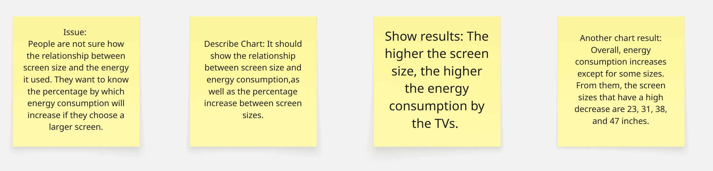
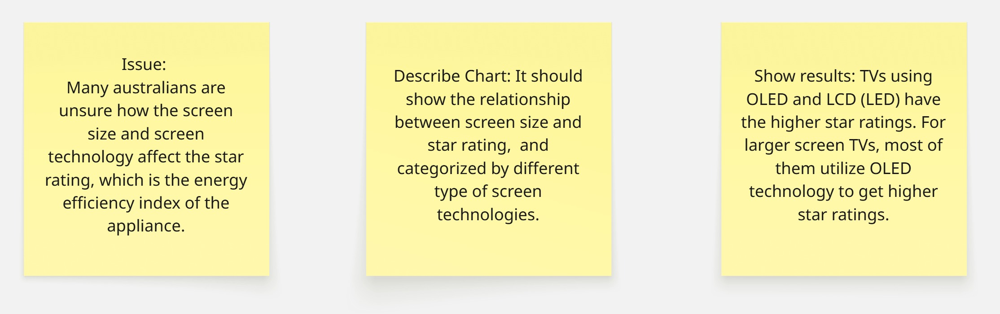
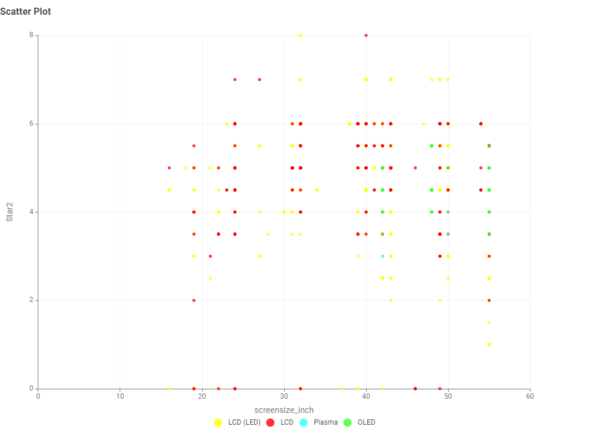

Story Telling
First Storyboard Overview

Energy Consumption Chart for Different Screen Technology

Insight: OLED has the lowest Power_per_cm2 while the Plasma has the highest Power_per_cm2. This means that OLED TVs spend the least electricity while Plasma spend the most compared to others.
Second Storyboard Overview

Energy Consumption for Different brands of TVs

Insight: The bar chart show that brand Spark ELectronic has the highest Avg_Mode_Power, while the brand ARK have the lowest Avg_Mode_Power. Therefore, the Spark Electronic TVs spend more electricity when in used, while ARK TVs use the least.
Third Storyboard Overview

The relationship between Avg_mode_power and Screen Size of the TVs

Insight: As the screen size of the TVs increase, the energy consumption of the TVs also increases.
Percentage Change of Energy Consumption for Different Screen Sizes

Insight: In the bar graph, the percentage of energy consumption compared between current and previous sizes is always increasing, except for certain screen sizes.
Fourth Storyboard Overview

Percentage Change of Energy Consumption for Different Screen Sizes

Insight: For TVs with high star2 ratings (such as 7 and 8), the majority are using LCD (LED) or LCD with screen size are in the range of 24 to 50 inches. Once screen sizes exceed 50 inches, most TVs used OLED technology to achieve high star ratings.